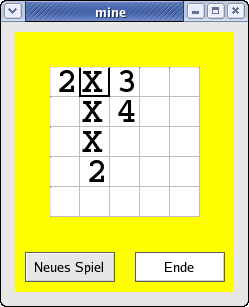

| Das BabyDevelop
Minensuchspiel ist eine vereinfachte Variante des beliebten und bekannten Linux-Minensuchspiel. Mit einem "Rechtsklick" kann ein "X" gesetzt werden um die "vermutete" Lage einer Mine zu kennzeichnen. Mit "Linksklick" wird die Anzahl der angrenzenden Minen durch eine Ziffer symbolisiert - oder Sie haben eine Mine getroffen. Eine Mine wird Ihnen jedoch nur mitgeteilt - das Spiel wird durch einen "Minentreffer" nicht beendet :-) |
 |
| (c)ufg@hosengummi.de |